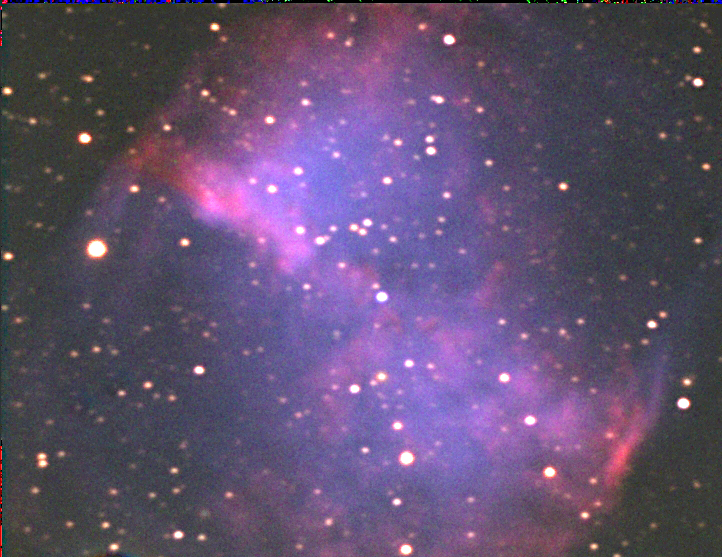
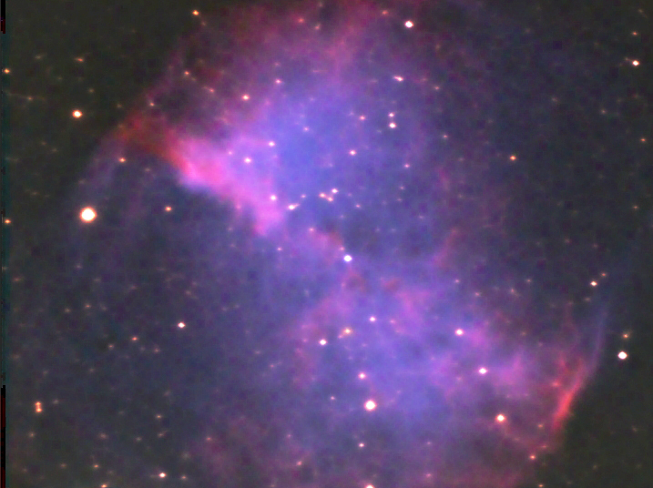

This is a higer resolution image of M27. This is the same image processed differently to help show the filimentary structure in the nebula. These are composed of 10 images taken per LRGB filter at 30 sec. each and combined and processed in Maxim DL.

